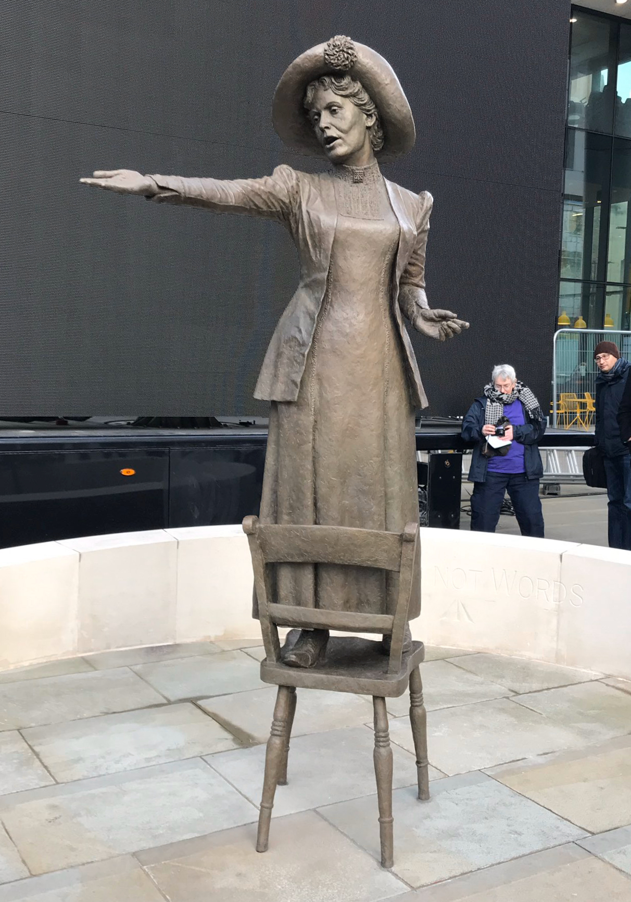
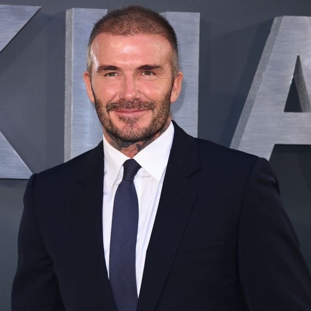
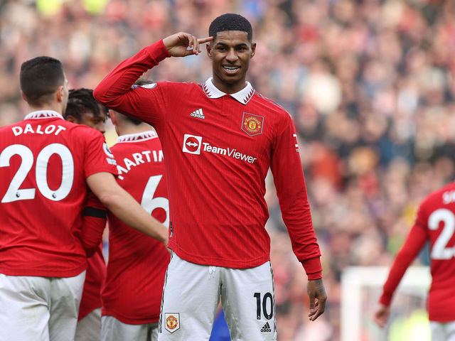

FAMOUS PEOPLE IN MANCHESTER
Emmeline Pankhurst
Emmeline Pankhurst was an English political activist. She is best remembered for organizing the UK suffragette movement and helping women win the right to vote. In 1999, Time named her as one of the 100 Most Important People of the 20th Century, stating that "she shaped an idea of objects for our time" and "shook society into a new pattern from which there could be no going back". She was widely criticised for her militant tactics, and historians disagree about their effectiveness, but her work is recognised as a crucial element in achieving women's suffrage in the United Kingdom. Born in the Moss Side district of Manchester to politically active parents, Pankhurst was introduced at the age of 14 to the women's suffrage movement. She founded and became involved with the Women's Franchise League, which advocated suffrage for both married and unmarried women. When that organisation broke apart, she tried to join the left-leaning Independent Labour Party through her friendship with socialist Keir Hardie but was initially refused membership by the local branch on account of her sex.
David Beckham
David Beckham is one of Britain's most iconic athletes whose name is also an global advertising brand.
David Beckham is a former professional footballer who played for Manchester United, Real Madrid, LA Galaxy, AC Milan and Paris Saint-Germain, as well as the England national team. He is widely regarded as one of the best midfielders and free-kick takers of his generation, and one of the most famous and influential footballers of all time.
He is also a successful businessman, a UNICEF ambassador, and a co-owner of two football clubs: Inter Miami and Salford City
Marcus Rashford
Marcus Rashford born October 31, 1997 is an English soccer player (called footballer in many parts of the world). He plays as a forward for Manchester United and the England national team. Rashford has been with Manchester United since he was seven years old. He made his debut for the first team in 2016 in a game against Midtjylland. He scored two goals in that game, and two more in his next game against Arsenal. Rashford also scored in his first game for the England national team in May 2016.
Rashford also campaigns on issues of child food poverty and literacy in the UK. Rashford was awarded Member of the Order of the British Empire for his charity work. In addition, he was also awarded an honorary doctorate from the University of Manchester.
Jim Ratcliffe
Jim Ratcliffe is a British billionaire, chemical engineer, and businessman who is the founder, chairman and CEO of INEOS, a global chemicals and energy group. He is also a football fan and a co-owner of two football clubs: Inter Miami and Salford City.
He started his career with oil giant Esso, but later joined a private equity group and co-founded Inspec, a chemicals company that leased a former BP site in Antwerp, Belgium. In 1998, he formed INEOS in Hampshire to buy out Inspec and the Antwerp site.
He expanded INEOS through a series of acquisitions, buying unwanted operations from groups such as ICI and BP, and turning them into profitable businesses. INEOS now produces a wide range of chemicals, plastics, solvents, and fuels, and has a turnover of $65 billion in 2021
He is a lifelong supporter of Manchester United, and was once interested in buying the club. He also co-owns Inter Miami, a Major League Soccer club that debuted in 2020, and Salford City, a League Two club that he bought with his former Manchester United teammates in 2014